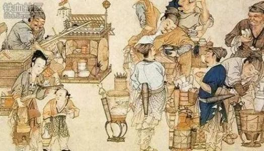

Eat Everywhere
About How to Enjoy Our Food
-
On The Way
When you commute, our Chinese food can give new sense distinct from others
-
On Daily Life
Everyday life needs every kinds of energies and they can come from magic Chinese Native Food
-
On Relaxing
When you have a leisure time, eating our food can give you a fantastice vigour
The Foods
So many foods in China comes from the native nature, so they are the God's Gift

History
The Story of Chinese Native Food
-
- B.C. 3000
- Huang Di, The Acestor Of ZhongHua
- The Zhong Hua civilization was given birth and the founder, and the founder, Huang Di, innovated many food legends.
-
- B.C. 3000
- Confucius, Culture Custom in Native Food
- The saint, Confucius, said there should be moral custom for both people and noble, and Chinese native food got the culture significance.
-

- A.C. 1100
- The Most Prosperity Belonging to Song Dynasty
- In Song danasty, the science, culture, politic and ecomomy reached the top of prosperity in ZhongHua civilization. Its Chinese native food was more than what we can see now.
-
- 2019
- Modern Life, More Than Foods
- Nowadays Chinese have more choices on food, more than the flavour, but also healthy and native.
- LINE of CHINESE NATIVE FOOD NEVER ENDS!!!
Chef
Masters of our food makers
XiaoDangJia
The Special Level of National chef
Food Gold
The champion of domestic cooking competition
XiaoFuGui
The chef responsible for national leaders' cuisine